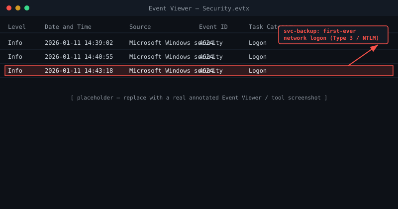

Background
A SOC alert fired on anomalous Kerberos activity from a domain controller at 03:14 UTC — a service account that had never authenticated interactively suddenly showed a Type 3 (network) logon from a workstation in the finance VLAN. That single alert is the entire reason this investigation exists; everything below is the process of turning it into a full timeline.
The finance workstation, FIN-WKS-014, was imaged with KAPE within the hour, and a memory capture was taken before the box was powered off. Triage started from two angles at once: disk artifacts on the workstation, and Windows Security event logs on the domain controller.
Initial access
Pulling the browser and mail artifacts off FIN-WKS-014 turned up a phishing email received four days earlier, with a link to a credential-harvesting page styled as the internal helpdesk portal. The user's Chrome history showed the link was clicked, and NTUSER.DAT registry hive timestamps line up with a helpdesk password reset roughly 20 minutes later — consistent with the user re-entering credentials into the fake portal, then "resetting" a password they believed had leaked.
That gave the actor a valid, low-privilege domain credential. From there, the interesting part starts: how a low-privilege account on one workstation escalated to a domain controller logon in under an hour.

Credential theft in memory
The KAPE triage collection included a full memory image (FIN-WKS-014.mem, 16 GB). Volatility3 was used to enumerate LSASS handles and hunt for signs of credential dumping:
# Identify processes holding a handle to lsass.exe
vol3 -f FIN-WKS-014.mem windows.handles --pid 692 | Select-String "lsass"
# Confirm process lineage for anything suspicious
vol3 -f FIN-WKS-014.mem windows.pstreeThe process tree showed rundll32.exe spawned directly from winword.exe roughly two minutes after the phishing email was opened — a classic macro-dropped-loader pattern — followed by an open handle from that rundll32.exe process into lsass.exe with PROCESS_VM_READ rights. That's consistent with an in-memory credential dumper reading LSASS to harvest NTLM hashes without ever touching disk.
$ vol3 -f FIN-WKS-014.mem windows.handles --pid 4412
PID Process Handle Type Name
4412 rundll32.exe 0x2f4 Process lsass.exe (PID 692) - PROCESS_VM_READNo credential-dumping tool binary was ever written to disk — this was almost certainly a reflectively-loaded module, which is why the disk timeline alone never would have surfaced it.
Lateral movement
With the finance user's NTLM hash in hand, the actor didn't need the plaintext password. The domain controller's Security log shows an NTLM (not Kerberos) Type 3 logon for the service account 38 minutes after the LSASS read, immediately followed by that service account creating a scheduled task — the actual pass-the-hash indicator, since this account had no prior history of interactive or remote use.
EventID=4624 LogonType=3 AuthPackage=NTLM TargetUserName=svc-backup SourceIP=10.12.4.41
EventID=4698 TaskName=\Updater SubjectUserName=svc-backup Command=powershell.exe -enc <base64>Decoding the base64 payload from Event ID 4698 revealed a short PowerShell downloader — the actor's actual foothold on the domain controller, staged for follow-on tooling that, fortunately, containment cut off before it executed.
Reconstructed timeline
Every entry below names the artifact it rests on. If a line has no source, it's a guess and doesn't belong in a timeline.
- 14:02:07 UTC Phishing link is clicked, landing on a fake internal helpdesk portal. Chrome History, FIN-WKS-014
- 14:03:41 UTC winword.exe spawns rundll32.exe two minutes after the email opens. Process tree, FIN-WKS-014.mem
- 14:04:55 UTC rundll32.exe opens a PROCESS_VM_READ handle on lsass.exe. Handle table, FIN-WKS-014.mem
- 14:21:03 UTC The account's helpdesk password is reset — a decoy, not remediation. NTUSER.DAT registry LastWrite
- 14:43:18 UTC svc-backup authenticates to DC-01 via NTLM — its first-ever network logon. Security.evtx, Event ID 4624
- 14:43:52 UTC svc-backup creates a scheduled task carrying an encoded PowerShell payload. Security.evtx, Event ID 4698
- 14:44:10 UTC DC-01 attempts an outbound connection; the egress rule blocks it. Firewall log, DC-01
Artifact correlation
What each artifact establishes, and the limit of what it can establish on its own — search or filter by confidence to explore it the way I did while building the case.
| Artifact | Source | Establishes | Does not establish | Confidence |
|---|---|---|---|---|
| winword.exe → rundll32.exe process lineage | Process tree, FIN-WKS-014.mem | A macro-spawned loader process ran on FIN-WKS-014 two minutes after the phishing email was opened. | Not that this process dumped credentials — only that the anomalous lineage exists. | High |
| rundll32.exe handle on lsass.exe (PROCESS_VM_READ) | Handle table, FIN-WKS-014.mem | rundll32.exe held a read handle into LSASS memory at 14:04:55. | Not that hash extraction succeeded — no dumped credential blob was recovered to confirm it directly. | High |
| Event ID 4698, scheduled task "Updater" | Security.evtx, DC-01 | svc-backup created a scheduled task with an encoded PowerShell payload immediately after logon. | Not that the payload executed — containment cut off before that could be confirmed. | High |
| Chrome History, URL visit | FIN-WKS-014 | The phishing link was clicked in the browser. | Not that credentials were actually entered on the fake portal. | Medium |
| NTUSER.DAT registry LastWrite | FIN-WKS-014 | The account's password was reset roughly 20 minutes after the phishing click. | Not that the reset happened through the fake portal rather than the real helpdesk. | Medium |
| Event ID 4624, NTLM Type 3 logon | Security.evtx, DC-01 | svc-backup authenticated to DC-01 from FIN-WKS-014 for the first time ever recorded. | Not, on its own, that the credential used was the one read from LSASS — the link is timing, not cryptographic proof. | Medium |
| Firewall egress log, blocked outbound connection | DC-01 | DC-01 attempted an outbound connection at 14:44:10 that the egress rule blocked. | Not the destination or intent — could be the staged payload's callback, or unrelated traffic. | Low |
No artifacts match that filter.
Attack flow
Key learnings
- Memory-only credential theft leaves no disk artifact. The LSASS read never touched disk; only a live/recent memory capture surfaced it. If KAPE triage hadn't included a
.memdump, this pivot point would have been invisible. - A never-before-seen NTLM logon on a service account is a strong signal. Baselining "this account has never logged on this way before" caught the lateral movement faster than any static signature would have.
- The password reset was a decoy, not remediation. Analysts should treat any credential change shortly after suspected compromise as a data point to timeline, not evidence the issue is closed.